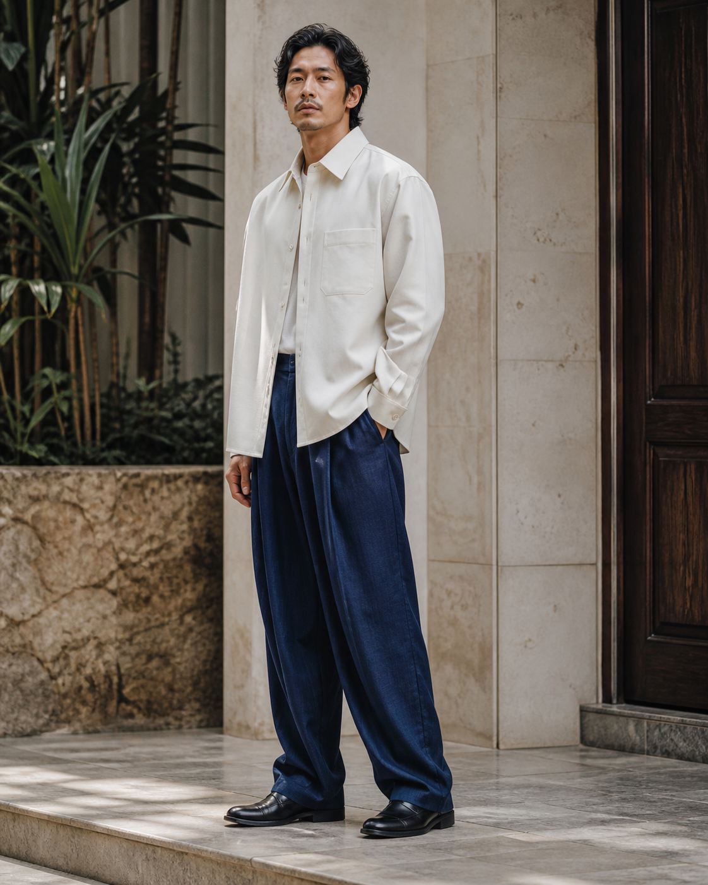

Capsule 05 / look 01
The travelling set
A crisp overshirt and relaxed linen trouser, cut for heat, movement, and an unplanned stop.
Two-piece setRp2.480.000
ColourIvory + indigo
Choose trouser size
SMLXL
Jakarta delivery: 1–2 working days. Exchange size within 7 days, unworn.
Each set has a softened, breathable hand and a relaxed cut. Fit help, garment measurements, availability, and the exchange route sit with the product decision.